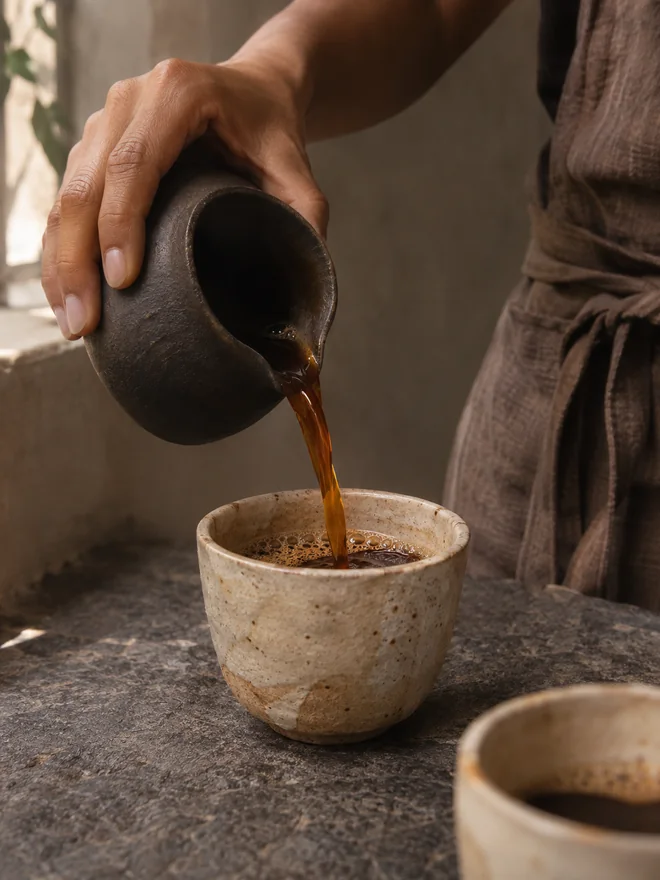
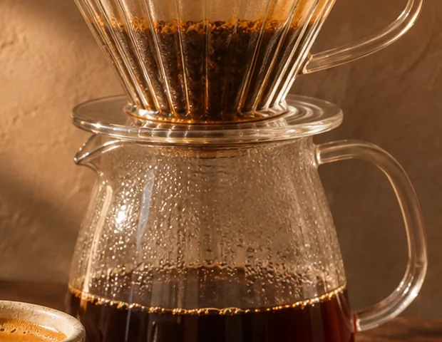

The coffee bar
Jesús Carranza 119
A block from Santo Domingo, Nono occupies a small coffee bar in central Oaxaca City. It’s a place to stop for coffee while exploring the neighbourhood.

The place
Nono is a small coffee bar in central Oaxaca, steps from Santo Domingo. Local coverage has featured its brewing methods and use of Oaxacan beans.
At the bar
Public listings and coverage mention espresso drinks and pour-over coffee. Ask at the bar which beans and brewing methods are available.
Explore the menu
About
The coffee bar
A block from Santo Domingo, Nono occupies a small coffee bar in central Oaxaca City. It’s a place to stop for coffee while exploring the neighbourhood.

The coffee
Espresso concentrates the coffee into a few sips. In pour-over, water passes more slowly through the grounds. Both brewing methods appear in reviews of Nono.
The story
In 2023, the Oaxaca magazine Quixe covered Nono as it approached its first anniversary. Its article highlighted different brewing methods and Oaxacan beans.


Daily · 7 am–8 pm
Hours are pending confirmation. Check before visiting.